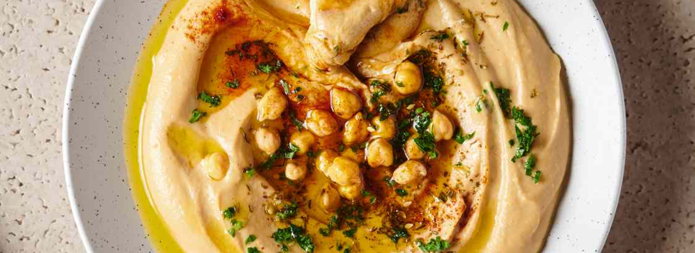

Hummus

I serve this at least once a week with a chicken or steak meal or just as a quick snack. Learned from my late grandfather who was of Lebanese descent. Serve with fresh Arabic bread.
1 (15 ounce) can garbanzo beans (chickpeas), drained
3 tablespoons tahini
2 tablespoons olive oil
1 tablespoon fresh lemon juice
¼ cup water
3 cloves garlic, crushed
½ teaspoon ground cumin (Optional)
1 pinch paprika
1 sprig fresh parsley, chopped
Place garbanzo beans, tahini, olive oil, lemon juice, water, garlic, and cumin into a food processor and process until smooth, about 1 minute.
Transfer to a bowl and sprinkle top of hummus with paprika and fresh parsley.